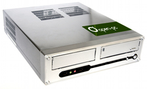

Πρόκειται για ένα πολύ ενδιαφέρον εγχείρημα από την κοινότητα ελεύθερου λογισμικού, η κυκλοφορία ενός open υπολογιστή. Το Open-pc μεταφράζεται σε ένα δυνατό μηχάνημα για δουλειά γραφείου, κόστους 359 ευρώ, στο οποίο πάνω θα τρέχουν Linux σε περιβάλλον KDE.

Συγκρίνοντας τους υπολογιστές που έχω τώρα σε σχέση με αυτόν καταλαβαίνω ότι πρόκειται για εξαιρετική τιμή. Ανυπομονώ να κυκλοφορήσει γιατί θα αποτελέσει στάνταρ αγορά. Αν μας λένε την αλήθεια θα κυκλοφορήσει τέλος του Φεβρουαρίου.
Διαβάστε ακόμα τι λέει το elkosmas.gr επί του θέματος.